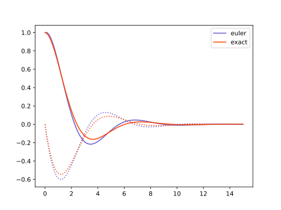

About
This package applies parallel-in-time integration, specifically Parareal, to OpenFOAM. We have two example cases: flow around a cylinder and laminar flow through a pipe.
Installing
To install additional requirements, have OpenFOAM installed and run:
poetry installArchitecture
From the perspective of the Parareal algorithm we are solving an ODE.
Implementation
The abstract Vector, defined below, represents any single state in the simulation. In OpenFOAM we have the following folder structure:
├── 0
│ ├── p
│ └── U
├── 1
│ └── <... data fields ...>
├── <... time directories ...>
├── constant
│ ├── transportProperties
│ └── turbulenceProperties
└── system
├── blockMeshDict
├── controlDict
├── decomposeParDict
├── fvSchemes
└── fvSolutionFor our application a Vector is then a combination of an OpenFOAM case (i.e. the folder structure above), and a string denoting the time directory matching the referred snapshot. The directory structure containing only the 0 time is now the BaseCase. We can copy a Vector by copying the contents of the BaseCase and the single time directory that belongs to that Vector.
file:pintFoam/vector.py
from __future__ import annotations
import operator
import mmap
from contextlib import contextmanager
from dataclasses import dataclass
from pathlib import Path
from uuid import uuid4
from shutil import copytree, rmtree # , copy
from typing import List, Optional
from byteparsing import parse_bytes, foam_file
from PyFoam.RunDictionary.ParsedParameterFile import ParsedParameterFile # type: ignore
from PyFoam.RunDictionary.SolutionDirectory import SolutionDirectory # type: ignore
<<base-case>>
<<pintfoam-vector>>Base case
We will operate on a Vector the same way everything is done in OpenFOAM, that is:
- Copy-paste a case (known as the base case)
- Edit the copy with new simulation parameters
- Run the simulation
This is why for every Vector we define a BaseCase that is used to generate new vectors. The BaseCase should have only one time directory containing the initial conditions, namely 0. The simulation generates new folders containing the data corresponding to different times. The time is coded, somewhat uncomfortably, in the directory name (0.01, 0.02, and so on), which is why we store the time coordinate as a string.
The class Vector takes care of all those details.
«base-case»
@dataclass
class BaseCase:
"""Base case is a cleaned version of the system. If it contains any fields,
it will only be the `0` time. Any field that is copied for manipulation will
do so on top of an available base case in the `0` slot."""
root: Path
case: str
fields: Optional[List[str]] = None
@property
def path(self):
return self.root / self.case
def new_vector(self, name: Optional[str] = None):
"""Creates new `Vector` using this base case."""
new_case = name or uuid4().hex
new_path = self.root / new_case
if not new_path.exists():
copytree(self.path, new_path)
return Vector(self, new_case, "0")
def all_vector_paths(self):
"""Iterates all sub-directories in the root."""
return (x for x in self.root.iterdir()
if x.is_dir() and x.name != self.case)
def clean(self):
"""Deletes all vectors of this base-case."""
for path in self.all_vector_paths():
rmtree(path)In our implementation, if no name is given to a new vector, a random one is generated.
Retrieving files and time directories
Note that the BaseCase has a property path. The same property will be defined in Vector. We can use this common property to retrieve a SolutionDirectory, ParameterFile or TimeDirectory.
- These are PyFoam routines that may need to be replaced
«pintfoam-vector»
def solution_directory(case):
return SolutionDirectory(case.path)
def parameter_file(case, relative_path):
return ParsedParameterFile(case.path / relative_path)
def time_directory(case):
return solution_directory(case)[case.time]
def get_times(path):
"""Get all the snapshots in a case, sorted on floating point value."""
def isfloat(s: str) -> bool:
try:
float(s)
return True
except ValueError:
return False
return sorted(
[s.name for s in path.iterdir() if isfloat(s.name)],
key=float)Vector
The Vector class stores a reference to the BaseCase, a case name and a time.
«pintfoam-vector»
@dataclass
class Vector:
base: BaseCase
case: str
time: str
<<pintfoam-vector-properties>>
<<pintfoam-vector-clone>>
<<pintfoam-vector-operate>>
<<pintfoam-vector-operators>>From a vector we can extract a file path pointing to the specified time slot, list the containing files and read out internalField from any of those files.
«pintfoam-vector-properties»
@property
def path(self):
"""Case path, i.e. the path containing `system`, `constant` and snapshots."""
return self.base.root / self.case
@property
def fields(self):
"""All fields relevant to this base case."""
return self.base.fields
@property
def dirname(self):
"""The path of this snapshot."""
return self.path / self.time
def all_times(self):
"""Get all available times, in order."""
return [Vector(self.base, self.case, t)
for t in get_times(self.path)]We do arithmetic on Vector by cloning an existing Vector and then modify the internalField values inside. This can be done very efficiently using memory-mapped array access. The mmap_data member takes care of loading the data and closing the file when we’re done with it in a nifty context manager.
«pintfoam-vector-properties»
@contextmanager
def mmap_data(self, field):
"""Context manager that yields a **mutable** reference to the data contained
in this snapshot. Mutations done to this array are mmapped to the disk directly."""
f = (self.dirname / field).open(mode="r+b")
with mmap.mmap(f.fileno(), 0) as mm:
content = parse_bytes(foam_file, mm)
try:
yield content["data"]["internalField"]
except KeyError as e:
print(content)
raise eWe clone a vector by creating a new vector and copying the internal fields.
«pintfoam-vector-clone»
def clone(self, name: Optional[str] = None) -> Vector:
"""Clone this vector to a new one. The clone only contains this single snapshot."""
x = self.base.new_vector(name)
x.time = self.time
rmtree(x.dirname, ignore_errors=True)
copytree(self.dirname, x.dirname)
return xIn order to apply the parareal algorithm to our vectors (or indeed, any other algorithm worth that name), we need to define how to operate with them. Particularly, we’ll need to implement:
- Vector addition and subtraction (as we’ll need to sum and subtract the results of applying the coarse and fine integrators)
- Vector scaling (as the integrators involve scaling with the inverse of the step)
In order to achieve this, first we’ll write generic recipes for any operation between vectors and any operation between a scalar and a vector:
«pintfoam-vector-operate»
def zip_with(self, other: Vector, op) -> Vector:
x = self.clone()
for f in self.fields:
with x.mmap_data(f) as a, other.mmap_data(f) as b:
a[:] = op(a, b)
return x
def map(self, f) -> Vector:
x = self.clone()
for f in self.fields:
with x.mmap_data(f) as a:
a[:] = f(a)
return xWe now have the tools to define vector addition, subtraction and scaling.
«pintfoam-vector-operators»
def __sub__(self, other: Vector) -> Vector:
return self.zip_with(other, operator.sub)
def __add__(self, other: Vector) -> Vector:
return self.zip_with(other, operator.add)
def __mul__(self, scale: float) -> Vector:
return self.map(lambda x: x * scale)In the code chunk above we used the so-called magic methods. If we use a minus sign to subtract two vectors, the method __sub__ is being executed under the hood.
OpenFOAM calls
file:pintFoam/foam.py
import subprocess
import math
from typing import Optional, Union
from .vector import (BaseCase, Vector, parameter_file, get_times)
<<pintfoam-map-fields>>
<<pintfoam-set-fields>>
<<pintfoam-block-mesh>>
<<pintfoam-epsilon>>
<<pintfoam-solution>>setFields utility
We may want to call setFields on our Vector to setup some test cases.
«pintfoam-set-fields»
def set_fields(v, *, default_field_values, regions):
"""Wrapper for OpenFOAM's setFields."""
x = parameter_file(v, "system/setFieldsDict")
x['defaultFieldValues'] = default_field_values
x['regions'] = regions
x.writeFile()
subprocess.run("setFields", cwd=v.path, check=True)mapFields
The mapFields utility interpolates a field from one mesh onto another. The resulting field values are written to the 0 time directory, so we need to rename that directory after calling mapFields for consistency with the Vector infrastrucutre.
«pintfoam-map-fields»
def map_fields(source: Vector, target: BaseCase, consistent=True, map_method=None) -> Vector:
"""Wrapper for OpenFOAM's mapFields
Use consistent=False if the initial and final boundaries differ.
Valid arguments for `map_method`: mapNearest, interpolate, cellPointInterpolate
"""
result = target.new_vector()
result.time = source.time
arg_lst = ["mapFields"]
if consistent:
arg_lst.append("-consistent")
if map_method is not None:
arg_lst.extend(["-mapMethod", map_method])
arg_lst.extend(["-sourceTime", source.time, source.path.resolve()])
subprocess.run(arg_lst, cwd=result.path, check=True)
(result.path / "0").rename(result.dirname)
return resultblockMesh
The blockMesh utility generates an OpenFOAM mesh from a description in the blockMesh format. This is usually called on a baseCase so that the mesh information is shared by all vectors.
«pintfoam-block-mesh»
def block_mesh(case: BaseCase):
"""Wrapper for OpenFOAM's blockMesh."""
subprocess.run("blockMesh", cwd=case.path, check=True)Implementation of Solution
Remember, the definition of a Solution,
Solution = Callable[[Vector, float, float], Vector]meaning, we write a function taking a current state Vector, the time now, and the target time, returning a new Vector for the target time.
The solver will write directories with floating-point valued names. This is a very bad idea by the folks at OpenFOAM, but it is one we’ll have to live with. Suppose you have a time-step of \(0.1\), what will be the names of the directories if you integrate from \(0\) to \(0.5\)?
[x * 0.1 for x in range(6)]In Python 3.7, this gives [0.0, 0.1, 0.2, 0.30000000000000004, 0.4, 0.5]. Surely, if you give a time-step of \(0.1\) to OpenFOAM, it will create a directory named 0.3 instead. We’ll define the constant epsilon to aid us in identifying the correct state directory given a floating-point time.
«pintfoam-epsilon»
epsilon = 1e-6Our solution depends on the solver chosen and the given time-step:
«pintfoam-solution»
def foam(solver: str, dt: float, x: Vector, t_0: float, t_1: float,
write_interval: Optional[float] = None,
job_name: Optional[str] = None,
write_control: str = "runTime") -> Vector:
"""Call an OpenFOAM code.
Args:
solver: The name of the solver (e.g. "icoFoam", "scalarTransportFoam" etc.)
dt: deltaT parameter
x: initial state
t_0: startTime (should match that in initial state)
t_1: endTime
write_interval: if not given, this is computed so that only the endTime
is written.
Returns:
The `Vector` representing the end state.
"""
<<pintfoam-solution-function>>The solver clones a new vector, sets the controlDict, runs the solver and then creates a new vector representing the last time slice.
«pintfoam-solution-function»
assert abs(float(x.time) - t_0) < epsilon, f"Times should match: {t_0} != {x.time}."
y = x.clone(job_name)
write_interval = write_interval or (t_1 - t_0)
<<set-control-dict>>
<<run-solver>>
<<return-result>>controlDict
Because writing the controlDict sometimes fails, we try it a few times. For this we need to create a backup of the original contents of controlDict.
«set-control-dict»
backup = open(y.path / "system" / "controlDict", "r").read()
for i in range(5): # this sometimes fails, so we try a few times, maybe disk sync issue?
try:
print(f"Attempt {i+1} at writing controlDict")
controlDict = parameter_file(y, "system/controlDict")
controlDict.content['startFrom'] = "latestTime"
controlDict.content['startTime'] = float(t_0)
controlDict.content['endTime'] = float(t_1)
controlDict.content['deltaT'] = float(dt)
controlDict.content['writeInterval'] = float(write_interval)
controlDict.content['writeControl'] = write_control
controlDict.writeFile()
break
except Exception as e:
exception = e
open(y.path / "system" / "controlDict", "w").write(backup)
else:
raise exceptionRun solver
«run-solver»
with open(y.path / "log.stdout", "w") as logfile, \
open(y.path / "log.stderr", "w") as errfile:
subprocess.run(solver, cwd=y.path, check=True, stdout=logfile, stderr=errfile)Return result
We retrieve the time of the result by looking at the last time directory.
«return-result»
t1_str = get_times(y.path)[-1]
return Vector(y.base, y.case, t1_str)Appendix A: Utils
file:pintFoam/utils.py
<<push-dir>>Cleaning up
file:pintFoam/clean.py
import argh # type:ignore
from pathlib import Path
from .vector import BaseCase
@argh.arg("target", help="target path to clean")
@argh.arg("--base_case", help="name of the base-case")
def main(target: Path, base_case: str = "baseCase"):
"""Auxiliary function that deletes all vectors of this base-case."""
BaseCase(Path(target), base_case).clean()
if __name__ == "__main__":
argh.dispatch_command(main)pushd
I haven’t been able (with simple attempts) to run a case outside the definition directory. Similar to the pushd bash command, I define a little utility in Python:
«push-dir»
import os
from pathlib import Path
from contextlib import contextmanager
from typing import Union
import functools
def decorator(f):
"""Creates a parametric decorator from a function. The resulting decorator
will optionally take keyword arguments."""
@functools.wraps(f)
def decorated_function(*args, **kwargs):
if args and len(args) == 1:
return f(*args, **kwargs)
if args:
raise TypeError(
"This decorator only accepts extra keyword arguments.")
return lambda g: f(g, **kwargs)
return decorated_function
@contextmanager
def pushd(path: Union[str, Path]):
"""Context manager to change directory to given path,
and get back to current dir at exit."""
prev = Path.cwd()
os.chdir(path)
try:
yield
finally:
os.chdir(prev)Parareal
file:pintFoam/parareal/__init__.py
from .tabulate_solution import tabulate
from .parareal import parareal
from . import abstract
__all__ = ["tabulate", "parareal", "schedule", "abstract"]Components
We may present the Parareal algorithm in abstract terms, and match those terms with corresponding type definitions in Python.
We need to define the following:
VectorA
Vectoris an object that represents the state of a solution at any one time. On this state we need to be able to do addition, subtraction and scalar multiplication, in order to perform the Parareal algorithm.SolutionA
Solutionis a function that takes an initialVector, a timet_0and a timet, returning the stateVectorat timet.MappingA
Mappingis a function from one stateVectorto another, for example a mapping from a coarse to a fine mesh or vice-versa.- Fine
SolutionThe fine solution is the solution at the desired resolution. If we were not doing parallel-in-time, this would be the integrator to get at the correct result. We may also use the fine solution to find a ground thruth in testing the Parareal solution.
- Coarse
SolutionThe coarse solution is the solution that is fast but less accurate.
file:pintFoam/parareal/abstract.py
from __future__ import annotations
from typing import (Callable, Protocol, TypeVar)
<<abstract-types>>Vector
We have an ODE in the form
\[y' = f(y, t).\](1)
Here \(y\) can be a scalar value, a vector of values (say a numpy array), or any expression of state. A naive implementation of an ODE integrator would be
\[y_{n+1} = y_{n} + \Delta t f(y_{n}, t).\](2)
eq. 2 is known as the forward Euler method. We can capture the state \(y\) in an abstract class we’ll call Vector. We chose this name because we expect this objects to share (some of) the arithmetic properties of mathematical vectors. Namely, we want to be able to add, subtract and scale them. The chunk below states this need of a basic arithmetic in the form of abstract methods.
«abstract-types»
TVector = TypeVar("TVector", bound="Vector")
class Vector(Protocol):
def __add__(self: TVector, other: TVector) -> TVector:
...
def __sub__(self: TVector, other: TVector) -> TVector:
...
def __mul__(self: TVector, other: float) -> TVector:
...
def __rmul__(self: TVector, other: float) -> TVector:
...We don’t actually need to implement these methods right now. All this is saying, is that any type that has these methods defined can stand in for a Vector.
Note that we don’t make a formal distinction here between a state vector and a vector representing a change in state.
«abstract-types»
Mapping = Callable[[TVector], TVector]Problem
An ODE is then given as a function taking a Vector (the state \(y\)) and a float (the time \(t\)) returning a Vector (the derivative \(y' = f(y,t)\) evaluated at \((y,t)\)). We define the type Problem:
«abstract-types»
Problem = Callable[[TVector, float], TVector]In mathematical notation the snippet above means:
\[{\rm Problem} : (y, t) \to f(y, t) = y'\]
Solution
If we have a Problem, we’re after a Solution: a function that, given an initial Vector (the initial condition \(y_0\)), initial time (\(t_0\)) and final time (\(t\)), gives the resulting Vector (the solution, \(y(t)\) for the given initial conditions).
«abstract-types»
Solution = Callable[[TVector, float, float], TVector]Those readers more familiar with classical physics or mathematics may notice that our Problem object corresponds with the function \(f\) in (eq. 1). The Solution object, on the other hand, corresponds with the evolution operator \(\phi\) in equation 3.
\[{\rm Solution} : (y_0, t_0; t) \to \phi(y_0, t_0; t) = y.\](3)
Intuitively, \(\phi\) represents any method that solves (even approximately) our initial value problem.
Example
An example of a Problem would be the function,
\[f(y, t) = r y,\]
in which case the corresponding Solution is,
\[\phi(y_0, t_0; t) = y_0 e^{r(t - t_0)}.\]
Solver
The challenge is, of course, to find a way of transforming a Problem into a Solution. This is what integration algorithms, or solvers do:
\[{\rm Solver} : {\rm Problem} \to {\rm Solution}.\]
If we look a bit closely at the definitions of Problem and Solution we’ll notice that a solver is indeed a functional that accepts functions of \((y,t)\) as an input and returns functions of \((y_0, t_0, t)\) as an output.
An example of such a solver is the forward Euler method (eq. 2), that can be implemented as:
file:pintFoam/parareal/forward_euler.py
from .abstract import (Vector, Problem, Solution)
def forward_euler(f: Problem) -> Solution:
"""Forward-Euler solver."""
def step(y: Vector, t_0: float, t_1: float) -> Vector:
"""Stepping function of Euler method."""
return y + (t_1 - t_0) * f(y, t_0)
return stepAny existing solution can be iterated over to provide a solution over a larger time interval. The iterate_solution function runs a given solution with a step-size fixed to \(\Delta t = h\).
file:pintFoam/parareal/iterate_solution.py
from .abstract import (Vector, Solution)
import numpy as np
import math
def iterate_solution(step: Solution, h: float) -> Solution:
def iter_step(y: Vector, t_0: float, t_1: float) -> Vector:
"""Stepping function of iterated solution."""
n = math.ceil((t_1 - t_0) / h)
steps = np.arange(t_0, t_1, n + 1)
for t_a, t_b in zip(steps[:-1], steps[1:]):
y = step(y, t_a, t_b)
return y
return iter_stepExample: damped harmonic oscillator
We give a bit more attention to the example of the harmonic oscillator, because it will also serve as a first test case for the Parareal algorithm later on.
The harmonic oscillator can model the movement of a pendulum or the vibration of a mass on a string.
\[y'' + 2\zeta \omega_0 y' + \omega_0^2 y = 0,\]
where \(\omega_0 = \sqrt{k/m}\) and \(\zeta = c / 2\sqrt{mk}\), \(k\) being the spring constant, \(m\) the test mass and \(c\) the friction constant.
To solve this second order ODE we need to introduce a second variable to solve for. Say \(q = y\) and \(p = y'\).
\[\begin{aligned} q' &= p\\ p' &= -2\zeta \omega_0 p + \omega_0^2 q \end{aligned}\](4)
The Problem is then given as
file:pintFoam/parareal/harmonic_oscillator.py
from .abstract import (Problem)
import numpy as np
def harmonic_oscillator(omega_0: float, zeta: float) -> Problem:
def f(y, t):
return np.r_[y[1], -2 * zeta * omega_0 * y[1] - omega_0**2 * y[0]]
return f
<<harmonic-oscillator-solution>>Exact solution
The damped harmonic oscillator has an exact solution, given the ansatz \(y = A \exp(z t)\), we get
\[z_{\pm} = \omega_0\left(-\zeta \pm \sqrt{\zeta^2 - 1}\right).\]
and thus the general solution:
\[y(t) = A \exp(z_+ t) + B \exp(z_- t) \ : \zeta \neq 1 \] \[y(t) = (A + Bt) \exp(-\omega_0 t) : \zeta = 1 \]
This dynamical system has three qualitatively different solutions, each of them depending on the sign of the contents of the square root. Particularly, if the contents of the square root are negative, the two possible values for \(z\) will be complex numbers, making oscillations possible. More specifically, the three cases are:
- overdamped (\(\zeta > 1\) and, thus, both \(z\) are real numbers)
- critical dampening (\(\zeta = 1\) and \(z\) is real and equal to \(-\omega_0\))
- underdamped (\(\mid \zeta \mid < 1\), and \(z = -\omega_0\zeta \mp i \omega_0 \sqrt{1 - \zeta^2}\)).
The underdamped case is typically the most interesting one. In this case we have solutions of the form:
\[y = A\quad \underbrace{\exp(-\omega_0\zeta t)}_{\rm dampening}\quad\underbrace{\exp(\pm i \omega_0 \sqrt{1 - \zeta^2} t)}_{\rm oscillation},\]
Given an initial condition \(q_0 = 1, p_0 = 0\), the solution is computed as
«harmonic-oscillator-solution»
def underdamped_solution(omega_0: float, zeta: float) -> np.ndarray:
amp = 1 / np.sqrt(1 - zeta**2)
phase = np.arcsin(zeta)
freq = omega_0 * np.sqrt(1 - zeta**2)
def f(t):
dampening = np.exp(-omega_0*zeta*t)
q = amp * dampening * np.cos(freq * t - phase)
p = - amp * omega_0 * dampening * np.sin(freq * t)
return np.c_[q, p]
return fNumeric solution
To plot a Solution, we need to tabulate the results for a given sequence of time points.
file:pintFoam/parareal/tabulate_solution.py
from .abstract import (Solution, Vector)
from typing import (Sequence, Any)
import numpy as np
Array = Any
def tabulate(step: Solution, y_0: Vector, t: Array) -> Sequence[Vector]:
"""Tabulate the step-wise solution, starting from `y_0`, for every time
point given in array `t`."""
if isinstance(y_0, np.ndarray):
return tabulate_np(step, y_0, t)
y = [y_0]
for i in range(1, t.size):
y_i = step(y[i-1], t[i-1], t[i])
y.append(y_i)
return y
<<tabulate-np>>In the case that the Vector type is actually a numpy array, we can specialize the tabulate routine to return a larger array.
«tabulate-np»
def tabulate_np(step: Solution, y_0: Array, t: Array) -> Array:
y = np.zeros(dtype=y_0.dtype, shape=(t.size,) + y_0.shape)
y[0] = y_0
for i in range(1, t.size):
y[i] = step(y[i-1], t[i-1], t[i])
return yWe can compare the results from the numeric integration with the exact solution.

Parareal
From Wikipedia:
Parareal solves an initial value problem of the form
\[\dot{y}(t) = f(y(t), t), \quad y(t_0) = y_0 \quad \text{with} \quad t_0 \leq t \leq T.\]
Here, the right hand side \(f\) can correspond to the spatial discretization of a partial differential equation in a method of lines approach. Parareal now requires a decomposition of the time interval \([t_0, T]\) into \(P\) so-called time slices \([t_j, t_{j+1}]\) such that
\[[t_0, T] = [t_0, t_1] \cup [t_1, t_2] \cup \ldots \cup [t_{P-1}, t_{P} ].\]
Each time slice is assigned to one processing unit when parallelizing the algorithm, so that \(P\) is equal to the number of processing units used for Parareal.
Parareal is based on the iterative application of two methods for integration of ordinary differential equations. One, commonly labelled \({\mathcal {F}}\), should be of high accuracy and computational cost while the other, typically labelled \({\mathcal {G}}\), must be computationally cheap but can be much less accurate. Typically, some form of Runge-Kutta method is chosen for both coarse and fine integrator, where \({\mathcal {G}}\) might be of lower order and use a larger time step than \({\mathcal {F}}\). If the initial value problem stems from the discretization of a PDE, \({\mathcal {G}}\) can also use a coarser spatial discretization, but this can negatively impact convergence unless high order interpolation is used. The result of numerical integration with one of these methods over a time slice \([t_{j}, t_{j+1}]\) for some starting value \(y_{j}\) given at \(t_{j}\) is then written as
\[y = \mathcal{F}(y_j, t_j, t_{j+1})\ {\rm or}\ y = \mathcal{G}(y_j, t_j, t_{j+1}).\]
Serial time integration with the fine method would then correspond to a step-by-step computation of
\[y_{j+1} = \mathcal{F}(y_j, t_j, t_{j+1}), \quad j=0, \ldots, P-1.\]
Parareal instead uses the following iteration
\[y_{j+1}^{k+1} = \mathcal{G}(y^{k+1}_j, t_j, t_{j+1}) + \mathcal{F}(y^k_j, t_j, t_{j+1}) - \mathcal{G}(y^k_j, t_j, t_{j+1}),\\ \quad j=0, \ldots, P-1, \quad k=0, \ldots, K-1,\]
where \(k\) is the iteration counter. As the iteration converges and \(y^{k+1}_j - y^k_j \to 0\), the terms from the coarse method cancel out and Parareal reproduces the solution that is obtained by the serial execution of the fine method only. It can be shown that Parareal converges after a maximum of \(P\) iterations. For Parareal to provide speedup, however, it has to converge in a number of iterations significantly smaller than the number of time slices, that is \(K \ll P\).
In the Parareal iteration, the computationally expensive evaluation of \(\mathcal{F}(y^k_j, t_j, t_{j+1})\) can be performed in parallel on \(P\) processing units. By contrast, the dependency of \(y^{k+1}_{j+1}\) on \(\mathcal{G}(y^{k+1}_j, t_j, t_{j+1})\) means that the coarse correction has to be computed in serial order.
Don’t get blinded by the details of the algorithm. After all, everything boils down to an update equation that uses a state vector \(y\) to calculate the state at the immediately next future step (in the same fashion as equation eq. 2 did). The core equation translates to:
«parareal-core-1»
y_n[i] = coarse(y_n[i-1], t[i-1], t[i]) \
+ fine(y[i-1], t[i-1], t[i]) \
- coarse(y[i-1], t[i-1], t[i])If we include a Mapping between fine and coarse meshes into the equation, we get:
«parareal-core-2»
y_n[i] = c2f(coarse(f2c(y_n[i-1]), t[i-1], t[i])) \
+ fine(y[i-1], t[i-1], t[i]) \
- c2f(coarse(f2c(y[i-1]), t[i-1], t[i]))The rest is boiler plate. For the c2f and f2c mappings we provide a default argument of the identity function.
file:pintFoam/parareal/parareal.py
from .abstract import (Solution, Mapping)
def identity(x):
return x
def parareal(
coarse: Solution,
fine: Solution,
c2f: Mapping = identity,
f2c: Mapping = identity):
def f(y, t):
m = t.size
y_n = [None] * m
y_n[0] = y[0]
for i in range(1, m):
<<parareal-core-2>>
return y_n
return fRunning in parallel
«import-dask»
from dask import delayed«daskify»
<<import-dask>>
import numpy as np
from pintFoam.parareal.harmonic_oscillator import \
( harmonic_oscillator, underdamped_solution )
from pintFoam.parareal.forward_euler import \
( forward_euler )
from pintFoam.parareal.tabulate_solution import \
( tabulate )
from pintFoam.parareal.parareal import \
( parareal )
attrs = {}
def green(f):
def greened(*args):
node = f(*args)
attrs[node.key] = {"fillcolor": "#8888cc", "style": "filled"}
return node
return greened
@delayed
def gather(*args):
return list(args)To see what Noodles does, first we’ll daskify the direct integration routine in tabulate. We take the same harmonic oscillator we had before. For the sake of argument let’s divide the time line in three steps (so four points).
«daskify»
omega_0 = 1.0
zeta = 0.5
f = harmonic_oscillator(omega_0, zeta)
t = np.linspace(0.0, 15.0, 4)We now define the fine integrator:
«daskify»
h = 0.01
@green
@delayed
def fine(x, t_0, t_1):
return iterate_solution(forward_euler(f), h)(x, t_0, t_1)It doesn’t really matter what the fine integrator does, since we won’t run anything. We’ll just pretend. The delayed decorator makes sure that the integrator is never called, we just store the information that we want to call the fine function. The resulting value is a promise that at some point we will call the fine function. The nice thing is, that this promise behaves like any other Python object, it even qualifies as a Vector! The tabulate routine returns a Sequence of Vectors, in this case a list of promises. The gather function takes a list of promises and turns it into a promise of a list.
«daskify»
y_euler = tabulate(fine, [1.0, 0.0], t)We can draw the resulting workflow:
«daskify»
gather(*y_euler).visualize("seq-graph.svg", rankdir="LR", data_attributes=attrs)
This workflow is entirely sequential, every step depending on the preceding one. Now for Parareal! We also define the coarse integrator.
«daskify»
@delayed
def coarse(x, t_0, t_1):
return forward_euler(f)(x, t_0, t_1)Parareal is initialised with the ODE integrated by the coarse integrator, just like we did before with the fine one.
«daskify»
y_first = tabulate(coarse, [1.0, 0.0], t)We can now perform a single iteration of Parareal to see what the workflow looks like:
«daskify»
y_parareal = gather(*parareal(coarse, fine)(y_first, t))«daskify»
y_parareal.visualize("parareal-graph.pdf", rankdir="LR", data_attributes=attrs)
Create example file
file:examples/harmonic_oscillator.py
<<plot-harmonic-oscillator>>
<<daskify>>Unit testing
Unit testing needs to be done on cases that are easy. For the moment we have selected pitzDaily for this.
file:test/test_foam_run.py
from pathlib import Path
from shutil import copytree
import numpy as np
from pintFoam.vector import BaseCase
from pintFoam.foam import (block_mesh, foam)
pitzDaily_fields = {
"T", "U", "phi"
}
def test_basic_pitzDaily(tmp_path):
path = Path(tmp_path) / "case0"
data = Path(".") / "test" / "cases" / "pitzDaily"
copytree(data, path / "base")
base_case = BaseCase(path, "base")
base_case.fields = pitzDaily_fields
block_mesh(base_case)
base_vec = base_case.new_vector()
init_vec = foam("scalarTransportFoam", 0.001, base_vec, 0.0, 0.001)
# init_vec.time = "0"
end_vec = foam("scalarTransportFoam", 0.01, init_vec, 0.001, 0.1)
assert end_vec.dirname.exists()
end_vec_clone = end_vec.clone()
assert end_vec_clone.time == end_vec.time
# assert get_times(end_vec_clone.path) == ["0", "0.1"]
diff_vec = end_vec - init_vec
for f in pitzDaily_fields:
with end_vec.mmap_data(f) as a, \
init_vec.mmap_data(f) as b, \
diff_vec.mmap_data(f) as c:
assert np.abs(a - b - c).mean() < 1e-6
# assert diff_vec.time == "0.1"
orig_vec = init_vec + diff_vec
should_be_zero = end_vec - orig_vec
for f in pitzDaily_fields:
with should_be_zero.mmap_data(f) as v:
assert np.all(np.abs(v) < 1e-6)
def test_restart(tmp_path):
path = Path(tmp_path) / "case0"
data = Path(".") / "test" / "cases" / "pitzDaily"
copytree(data, path / "base")
base_case = BaseCase(path, "base")
base_case.fields = pitzDaily_fields
block_mesh(base_case)
init_vec = base_case.new_vector()
check = foam("scalarTransportFoam", 0.01, init_vec, 0.0, 0.2)
end_vec = foam("scalarTransportFoam", 0.01, init_vec, 0.0, 0.1)
init_vec = end_vec.clone()
end_vec = foam("scalarTransportFoam", 0.01, init_vec, 0.1, 0.2)
diff = end_vec - check
for f in pitzDaily_fields:
with diff.mmap_data(f) as v:
assert np.all(np.abs(v) < 1e-6)